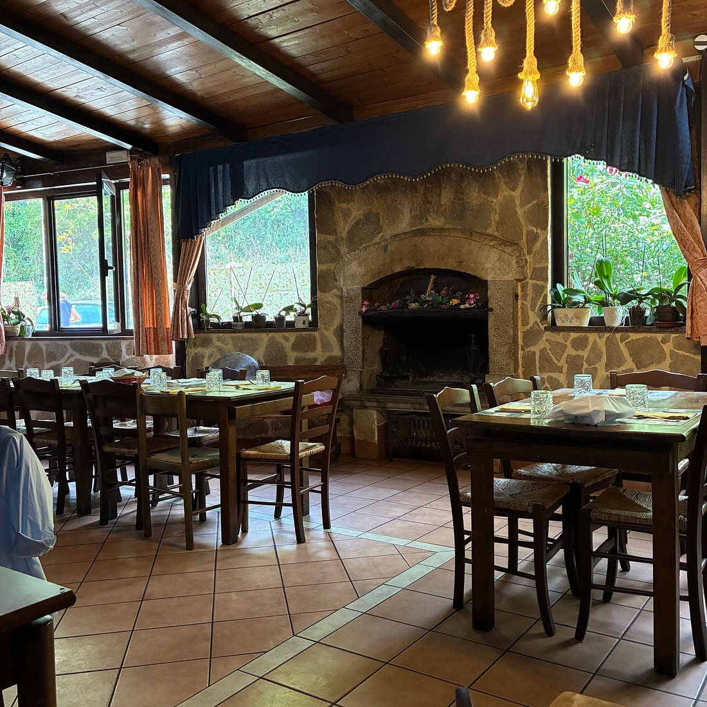
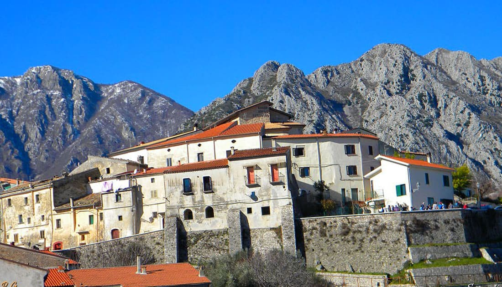
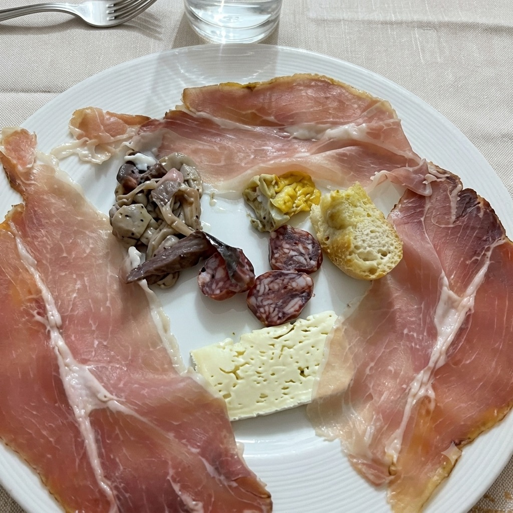
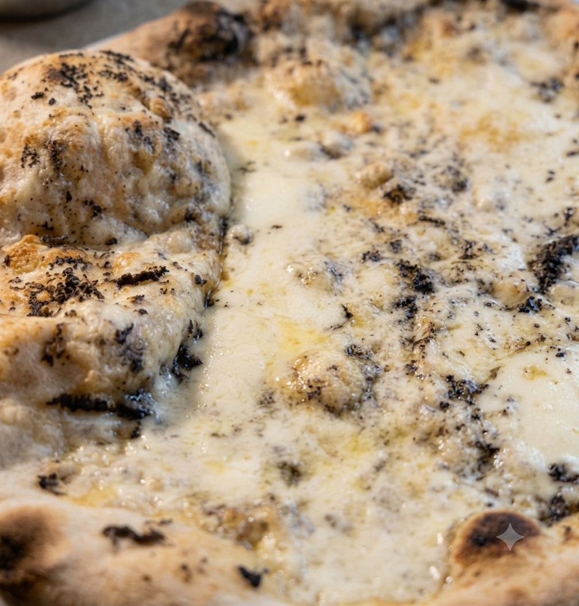
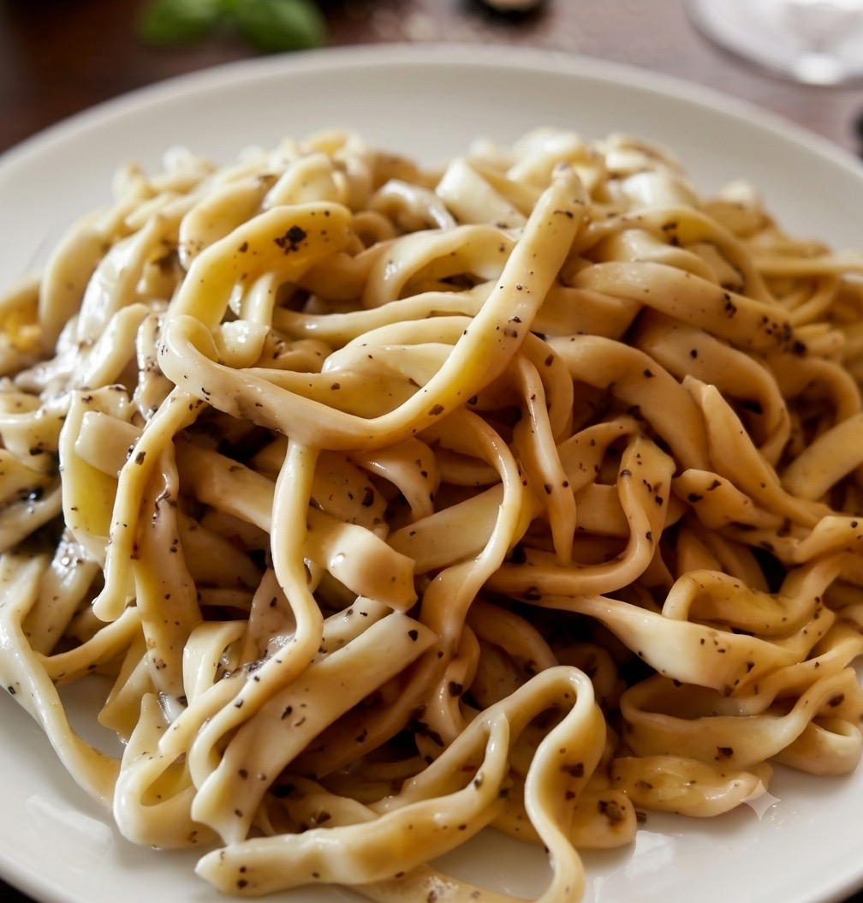

Non è semplicemente un pasto.
È un viaggio nei sapori della nostra terra.

Scapoli · Molise
Il sapore autentico del nostro territorio.
Tradizione, materia prima e passione nel cuore di Scapoli.

Il Ristorante
Terra Nostra nasce dall'amore per la cucina italiana e per il territorio che ci circonda.
A Scapoli, nel cuore del Molise, raccontiamo attraverso i nostri piatti il valore delle materie prime, delle tradizioni e dei sapori autentici della nostra terra.
Ogni piatto è pensato per offrire un'esperienza fatta di gusto, semplicità ed eleganza.
Dalla nostra terra, alla vostra tavola.
Il Territorio
Terra Nostra vive in un territorio fatto di montagne, borghi, tradizioni e materie prime. Scapoli rappresenta il punto d'incontro tra la nostra cucina e una terra ricca di storia e cultura.
È un viaggio nei sapori della nostra terra.
Galleria
Uno sguardo su Terra Nostra: la cucina, gli spazi, la terra che la circonda.

Piatti
Piatti
CucinaDettagliEventi e Occasioni Speciali
Cene speciali, ricorrenze, eventi privati e occasioni importanti: Terra Nostra è il luogo dove trasformare un momento speciale in un ricordo.
Prenotazione
Per prenotare, contattateci direttamente al numero:
0865 954135Per richieste particolari, eventi o gruppi numerosi, potete contattarci allo stesso numero.
Contatti
Terra Nostra
Via Fonte La Villa 1
Scapoli (IS), Molise, Italia
Lun–Mar · 12:30–15:00 / 19:30–22:30
Mer · 12:30–15:00
Gio · 12:30–15:00 / 19:30–22:30
Ven · Chiuso
Sab–Dom · 12:30–15:00 / 19:30–22:30
Via Fonte La Villa 1, Scapoli (IS), Molise
Come raggiungerci